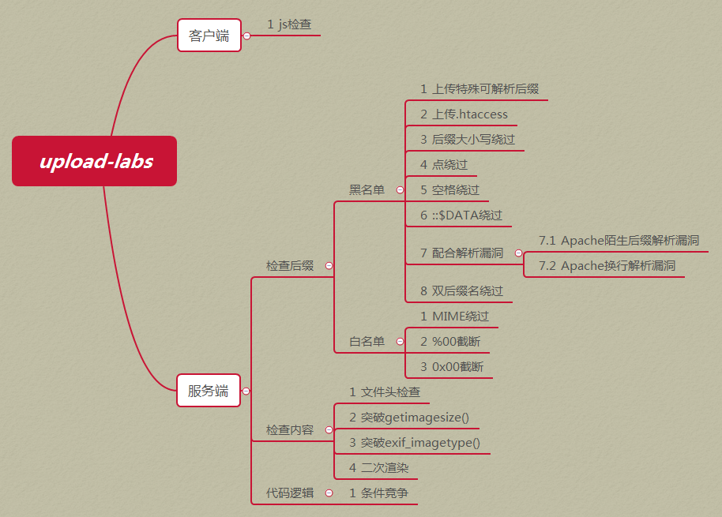

upload-labs是一个使用php语言编写的，专门收集渗透测试和CTF中遇到的各种上传漏洞的靶场。旨在帮助大家对上传漏洞有一个全面的了解。目前一共20关，每一关都包含着不同上传方式。
0x01 Screenshot
1.1 主界面

1.2 每一关

1.3 查看代码

0x02 Install
2.1 环境要求
若要自己亲自搭建环境，请按照以下配置环境，方可正常运行每个Pass。
| 配置项 | 配置 | 描述 |
|---|---|---|
| 操作系统 | Window or Linux | 推荐使用Windows，除了Pass-19必须在linux下，其余Pass都可以在Windows上运行 |
| PHP版本 | 推荐5.2.17 | 其他版本可能会导致部分Pass无法突破 |
| PHP组件 | php_gd2,php_exif | 部分Pass依赖这两个组件 |
| 中间件 | 设置Apache以moudel方式连接 |
2.2 Windows快速搭建
项目提供了一个Windows下,按照以上配置要求配置好的集成环境
下载地址：https://github.com/c0ny1/upload-labs/releases
集成环境绿色免安装，解压即可使用。
2.3 Linux快速搭建
创建镜像
$ cd upload-labs/docker |
或
$ docker pull c0ny1/upload-labs |
创建容器
$ docker run -d -p 80:80 upload-labs:latest |
0x03 Summary
3.1 靶机包含漏洞类型分类

3.2 如何判断上传漏洞类型?

0x04 Thanks
- 感谢小小黄做的logo